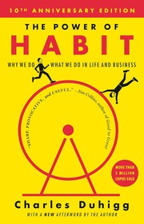
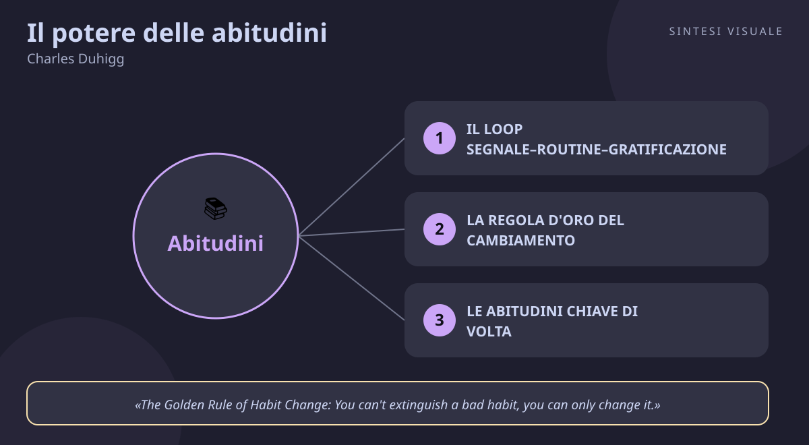

Home / Libri / Il potere delle abitudini

Il potere delle abitudini
Charles Duhigg · Successo e abitudini
«Il potere delle abitudini»
- Segnale routine gratificazione
- Regola d'oro del cambiamento
- Abitudini chiave di volta
- Forza di volonta e credenza
🧭Introduzione
Charles Duhigg non è un guru della crescita personale: è un giornalista investigativo del New York Times, abituato a seguire i fatti dove portano. La domanda che lo tormentava era personale e imbarazzante: perché lui, persona informata e intelligente, ogni pomeriggio non riusciva a resistere a un biscotto in mensa e ingrassava senza capire perché? Inseguendo la risposta ha intervistato neuroscienziati del MIT, generali americani, dirigenti di Procter & Gamble e Starbucks, allenatori della NFL — e nel febbraio 2012 ha pubblicato questo libro per Random House, diventato bestseller del New York Times, di Amazon e di USA Today (oltre 3 milioni di copie) e finalista al Financial Times and McKinsey Business Book of the Year (in italiano Il potere delle abitudini, TEA).
Perché conta oggi: passiamo circa il 40% delle nostre giornate in automatico, tra telefono, snack, procrastinazione e discussioni che si ripetono uguali. La forza di volontà da sola non basta: vince chi progetta le proprie abitudini, e questo libro è il manuale scientifico per farlo — a casa, al lavoro e nelle organizzazioni.
A chi è utile: a chi rimanda la dieta, la palestra o lo studio per l'ennesima volta; a manager e imprenditori che vogliono cambiare la cultura di un team; a venditori e marketer che vogliono capire perché i clienti comprano sempre le stesse cose.
📘Riassunto
La scintilla centrale: ogni abitudine è un loop neurologico in tre atti — segnale, routine, gratificazione — e una volta capito il tuo loop puoi smontarlo e rimontarlo a tuo favore, invece di combatterlo a colpi di volontà.
La struttura logica procede in tre parti:
- Le abitudini degli individui — il loop segnale-routine-gratificazione scoperto studiando Eugene Pauly, il paziente amnesico del MIT che imparava percorsi nuovi senza ricordarli: la prova che le abitudini vivono nei gangli della base, separati dalla memoria. Poi il craving, la voglia anticipata della gratificazione che rende il loop automatico (il caso Pepsodent: il dentifricio vinse perché la schiuma pizzicante dava al cervello il segnale "ha funzionato"). Infine la regola d'oro del cambiamento: tieni segnale e gratificazione, cambia solo la routine — come fece Bill Wilson fondando gli Alcolisti Anonimi.
- Le abitudini delle organizzazioni di successo — Paul O'Neill risanò il colosso Alcoa puntando su un'unica abitudine chiave di volta, la sicurezza sul lavoro, che trascinò con sé comunicazione, disciplina e profitti. Starbucks insegna ai baristi la forza di volontà come routine d'emergenza contro clienti difficili; il coach Tony Dungy portò i Colts a vincere il Super Bowl facendo ripetere gli schemi finché divennero automatici.
- Le abitudini della società — come i marketer di Febreze salvarono un prodotto fallimentare agganciandolo a un'abitudine esistente (finire di pulire → spruzzare → profumo di fresco), come il boicottaggio degli autobus di Montgomery decollò grazie ai legami deboli della comunità, e la conclusione sulla responsabilità: capire i propri loop significa non poter più dire "non potevo farci niente".
Il punto di svolta: il capitolo sulle abitudini chiave di volta: non devi cambiare tutto, ti basta cambiare un'abitudine che ne trascina cento altre. Da lì il lettore smette di sentirsi schiavo del carattere e inizia a vedersi come un ingegnere dei propri automatismi.
L'eredità oggi: il "loop dell'abitudine" è entrato nel linguaggio di coach, app di benessere e reparti marketing di tutto il mondo; il libro ha ispirato corsi aziendali in decine di paesi e resta il testo più solido — perché basato su neuroscienze vere, non su aneddoti — sul perché facciamo ciò che facciamo.
💡Concetti chiave
- Il loop segnale–routine–gratificazione: ogni abitudine è un circuito in tre atti, e il vero motore è il craving, la voglia anticipata della ricompensa.
- La regola d'oro del cambiamento: un'abitudine cattiva non si cancella, si sostituisce — tieni segnale e gratificazione, cambia solo la routine.
- Le abitudini chiave di volta: alcune abitudini (sport, ordine, un'unica riunione ben fatta) ne trascinano con sé decine di altre, in casa come in azienda.
- La forza di volontà è un muscolo: si affatica con l'uso ma si allena con la pratica — e i più bravi la usano il meno possibile, progettando routine d'emergenza in anticipo.
- Le piccole vittorie creano la credenza: i grandi cambiamenti durano solo se credi di potercela fare — e la credenza nasce da piccole prove e da una comunità che ci crede con te.
- Vesti il nuovo di vecchio: per lanciare un prodotto (o una nuova abitudine) aggancialo a routine che esistono già, invece di chiedere alla gente di cambiare tutto.
📖1. Il loop segnale–routine–gratificazione
- Definizione il cervello, per risparmiare fatica, impacchetta i comportamenti ripetuti in un ciclo: un segnale (un'ora, un luogo, un'emozione, certe persone, l'azione precedente) fa partire il pilota automatico, parte la routine (fisica, mentale o emotiva) e arriva la gratificazione (zucchero, sollievo, profumo, senso di completezza). Col tempo segnale e gratificazione si saldano e nasce il craving: il cervello inizia a volere la ricompensa prima ancora di riceverla.
- Esempio torni dal lavoro stressato (segnale emotivo + ora del giorno), apri il frigo e mangi dolci (routine), lo stress cala per dieci minuti (gratificazione). Dopo settimane non hai nemmeno fame: alle 19 il cervello reclama già il dolce.
- Come applicarlo (a) per una settimana annota ogni volta che scatta l'abitudine: dove sei, che ore sono, come ti senti, chi c'è, cosa hai appena fatto — il segnale emerge da solo; (b) chiediti quale gratificazione brami davvero (fame? pausa? compagnia?); (c) solo dopo aver isolato segnale e gratificazione potrai intervenire sulla routine.
- Errore comune attaccare la routine ("da domani niente dolci!") senza capire segnale e gratificazione — è come spegnere l'allarme senza spegnere l'incendio: il craving torna e ti travolge alla prima giornata storta.
- Collegamento i gangli della base studiati al MIT (la sede neurologica delle abitudini) e il condizionamento di Pavlov e Skinner: Duhigg ne dà la versione moderna, misurata con risonanze magnetiche.
📖2. La regola d'oro del cambiamento
- Definizione poiché le abitudini sono incise nei gangli della base, cancellarle è quasi impossibile — ma si possono sostituire: tieni lo stesso segnale, offriti la stessa gratificazione, inserisci una routine diversa. Il caso-simbolo è Bill Wilson: gli Alcolisti Anonimi insegnano che alla solitudine (segnale) si risponde chiamando lo sponsor invece di andare al bar (nuova routine), ottenendo la stessa compagnia e lo stesso sollievo (gratificazione).
- Esempio il biscotto pomeridiano di Duhigg: segnale ore 15:30, gratificazione vera non lo zucchero ma la socializzazione. Nuova routine: alzarsi, cercare un collega, chiacchierare dieci minuti in mensa senza comprare niente — perso poi più di 9 chili senza dieta.
- Come applicarlo (a) scrivi il tuo loop in tre colonne: segnale / routine attuale / gratificazione reale; (b) elenca tre routine alternative che diano la stessa gratificazione; (b‑bis) provale una alla settimana come esperimenti, finché una "prende"; (c) rendi la vecchia routine più scomoda (niente dolci in casa) e la nuova più facile (scarpe da corsa vicino al letto).
- Errore comune voler cambiare segnale e routine insieme ("cambio lavoro, città e dieta a gennaio") — troppi fronti, crollo garantito entro febbraio; oppure punirsi per le ricadute invece di trattarle come dati sull'esperimento.
- Collegamento James Clear (Atomic Habits) riprende la regola con il "sostituisci, non eliminare" e l'habit stacking; anche la terapia cognitivo-comportamentale per il fumo usa la sostituzione della routine.
📖3. Le abitudini chiave di volta
- Definizione alcune abitudini hanno un potere sproporzionato: cambiarne una fa crollare a catena decine di altri comportamenti, perché sposta il modo in cui ti vedi. L'esempio classico è lo sport: chi inizia ad allenarsi tende senza sforzo a mangiare meglio, fumare meno, dormire meglio e lavorare con più pazienza — non per disciplina extra, ma perché "sono diventato una persona che si prende cura di sé". In azienda, Paul O'Neill scelse la sicurezza sul lavoro e da lì cambiarono comunicazione, gerarchie e profitti di Alcoa.
- Esempio decidi di rifare il letto ogni mattina (due minuti): la casa sembra più in ordine, ti dispiace sporcare la cucina, inizi a preparare la borsa la sera prima — una micro-abitudine di ordine ne ha generate altre tre senza che tu le abbia pianificate.
- Come applicarlo (a) se devi sceglierne una sola, punta su movimento, sonno o ordine — le tre chiavi di volta più documentate; (b) in un team, individua l'unica routine che, sistemata, sistemerebbe tutto il resto (es. la riunione del lunedì, il modo in cui si gestiscono i reclami); (c) proteggila come sacra per 60 giorni prima di aggiungerne altre.
- Errore comune voler installare dieci abitudini insieme a gennaio (palestra, dieta, lettura, meditazione, inglese...) e mollarle tutte entro un mese; oppure disprezzare le micro-abitudini ("che cambia rifare il letto?") proprio perché sembrano troppo piccole.
- Collegamento il "principio di Pareto" applicato al comportamento e Essentialism di Greg McKeown (meno obiettivi, più leva); in azienda, il concetto di "vincolo" della Teoria dei Vincoli di Goldratt.
📖4. La forza di volontà è un muscolo
- Definizione la forza di volontà si consuma come un muscolo sotto sforzo (dopo una giornata di decisioni difficili crolla) ma si rafforza allenandola — e soprattutto si può risparmiare decidendo in anticipo cosa fare nei momenti critici. Starbucks addestra così i baristi: routine d'emergenza già pronte ("quando il cliente urla, faccio X e dico Y") così non serve improvvisare autocontrollo a caldo. Lo stesso faceva il nuotatore Michael Phelps: visualizzava ogni sera la gara perfetta e aveva una routine per ogni imprevisto (occhialini pieni d'acqua compresi).
- Esempio sai che alle riunioni di famiglia finisci a litigare con tuo fratello: prepari in anticipo la frase d'emergenza ("hai ragione, parliamone domani con calma") e la usi in automatico — niente eroismo, solo una routine che ha risparmiato il muscolo.
- Come applicarlo (a) individua i tuoi 2-3 "punti di rottura" prevedibili (sera stanca, clienti difficili, domenica noiosa); (b) scrivi per ciascuno una frase-azione d'emergenza e ripetila mentalmente; (c) riduci le decisioni inutili (menu fissi, vestiti pronti) per tenere il muscolo fresco per quelle che contano.
- Errore comune credere che basti "avere più carattere" e affrontare le tentazioni a mani nude ogni volta — i più disciplinati sono in realtà i più bravi a evitare le situazioni che richiedono disciplina; oppure allenare la volontà solo nei momenti di crisi invece che con piccole pratiche quotidiane.
- Collegamento gli studi sull'ego depletion di Roy Baumeister (Willpower); i "piani se-allora" (implementation intentions) di Peter Gollwitzer, la versione scientifica delle routine d'emergenza.
📖5. Le piccole vittorie creano la credenza
- Definizione per cambiare un'abitudine radicata non basta la tecnica: serve credere che il cambiamento sia possibile — e la credenza non si ordina, si costruisce con piccole prove di riuscita e con una comunità che ci crede insieme a te. Gli Alcolisti Anonimi funzionano anche per questo: il gruppo sospende il tuo scetticismo finché le prime settimane sobrie non ti convincono. In azienda, O'Neill accumulò "piccole vittorie" sulla sicurezza finché tutti credettero che Alcoa potesse davvero cambiare.
- Esempio vuoi rimetterti a studiare inglese dopo anni: invece di prometterti "un'ora al giorno", fai 10 minuti per una settimana e segni ogni giorno una X sul calendario — dopo sette X consecutive inizi a crederci, e raccontarlo a un'amica che fa lo stesso raddoppia l'effetto.
- Come applicarlo (a) scomponi l'obiettivo in vittorie così piccole da non poter fallire (5 minuti, una pagina, un isolato a piedi); (b) rendile visibili (calendario delle X, app di tracking, barattolo dei progressi); (c) unisciti a un gruppo — corso, community online, collega con lo stesso obiettivo — che normalizzi il tuo sforzo.
- Errore comune puntare subito alla grande vittoria ("maratona tra tre mesi") e interpretare il primo fallimento come prova di non farcela; oppure tentare tutto da soli per orgoglio, rinunciando al moltiplicatore più potente: gli altri che credono in te.
- Collegamento l'autoefficacia di Albert Bandura (credere di potercela fare predice il successo più del talento); Mindset di Carol Dweck: le piccole vittorie nutrono la mentalità di crescita.
📖6. Vesti il nuovo di vecchio
- Definizione il cervello adotta facilmente ciò che assomiglia a un'abitudine esistente e rifiuta ciò che chiede di cambiare tutto. I grandi successi commerciali raccontati nel libro funzionano così: Pepsodent non vendeva "igiene orale" ma un pizzicore familiare da desiderare ogni mattina; Febreze decollò solo quando smise di promettere "elimina i cattivi odori" e divenne il tocco finale della pulizia (finisci di pulire → spruzzi → profumo di fresco). Se vesti qualcosa di nuovo con abitudini vecchie, il pubblico lo adotta senza accorgersene.
- Esempio vuoi che in famiglia si sprechi meno cibo: invece di predicare l'ecologia, sposti nel frigo un ripiano "da finire oggi" all'altezza degli occhi — la routine della spesa resta uguale, ma l'abitudine di aprire e scegliere fa il resto da sola.
- Come applicarlo (a) prima di lanciare un prodotto, un servizio o una regola in azienda, chiediti "a quale abitudine esistente posso agganciarlo?"; (b) mantieni familiari inizio e fine dell'esperienza e innova solo il centro; (c) per le tue abitudini personali, innesta la nuova sulla vecchia ("dopo il caffè → due pagine di libro").
- Errore comune presentare il nuovo come rivoluzione totale ("dimentica tutto quello che sai!") e spaventare il cervello abitudinario; oppure copiare il prodotto vincente senza copiarne il loop di abitudine che lo sostiene.
- Collegamento Everett Rogers e la diffusione delle innovazioni (la "compatibilità" con le abitudini esistenti accelera l'adozione); Hooked di Nir Eyal, che porta il loop segnale-azione-ricompensa nel design delle app.
💬Citazioni da ricordare
"Change might not be fast and it isn't always easy. But with time and effort, almost any habit can be reshaped." — La frase-speranza del libro: cambiare è lento e faticoso, ma quasi nessuna abitudine è una condanna a vita. Vale la pena rileggerla nei giorni in cui ricadi.
"The Golden Rule of Habit Change: You can't extinguish a bad habit, you can only change it." — La regola operativa in una riga: smetti di chiederti "come elimino questo vizio?" e inizia a chiederti "con cosa lo sostituisco?".
"Champions don't do extraordinary things. They do ordinary things, but they do them without thinking, too fast for the other team to react. They follow the habits they've learned." — Le parole con cui Tony Dungy spiegava i suoi successi nella NFL: i campioni non improvvisano magie, eseguono automatismi allenati. La stessa cosa vale per venditori, studenti e genitori.
🌍Esempi di oggi
- Lo snack delle 17 in smart working. Lavori da casa e ogni pomeriggio finisci sul divano con patatine: segnale l'orario più la stanchezza da schermo, gratificazione la pausa vera. Prova la sostituzione: stessa ora, stessa pausa, ma camminata di dieci minuti più telefonata a un amico — molti scoprono che era la boccata d'aria a mancare, non le patatine.
- Il capo che sistema le riunioni e sistema l'azienda. Un team perde ore in riunioni caotiche: il manager ne sceglie una come abitudine chiave di volta — ordine del giorno la sera prima, decisioni scritte alla fine. In un mese le altre riunioni si adeguano da sole e i progetti accelerano: piccola vittoria che crea credenza collettiva.
- L'app che ti ha "vestito di nuovo". Hai iniziato a bere più acqua perché la borraccia smart lampeggia dopo ogni caffè: i designer hanno agganciato la nuova abitudine (bere) a una vecchia (il caffè) con segnale e gratificazione chiari. Stesso meccanismo di Pepsodent un secolo fa — cambiano i mezzi, il loop è identico.
🛠️Azioni pratiche
- Mappa un loop: scegli un'abitudine che vuoi cambiare e per 3 giorni annota segnale (dove, quando, emozione, persone, azione precedente) e gratificazione reale. Solo osservare, senza cambiare niente.
- Installa una chiave di volta: 10 minuti di camminata al giorno (o rifare il letto, o andare a letto alla stessa ora) per 7 giorni di fila, segnando ogni giorno una X sul calendario.
- Prepara una routine d'emergenza: scrivi su un foglietto la tua frase-azione per il punto di rottura più prevedibile ("quando ___ , io ___") e tienila dove ti serve (portafoglio, sfondo telefono, scrivania).
💎Da portare a casa
Non sei le tue abitudini: sei l'ingegnere delle tue abitudini — studia il loop, cambia la routine, coltiva la credenza.
Ti è rimasto un dubbio o vuoi andare più a fondo? Rispondi in chat con il numero del concetto (1–6) e lo espandiamo insieme con altri esempi, oppure fai una domanda su un tema: abitudini e dieta, forza di volontà, cambiare un team, smettere di procrastinare, marketing e clienti...
🖼️In un colpo d’occhio

Tocca l’immagine per ingrandirla.